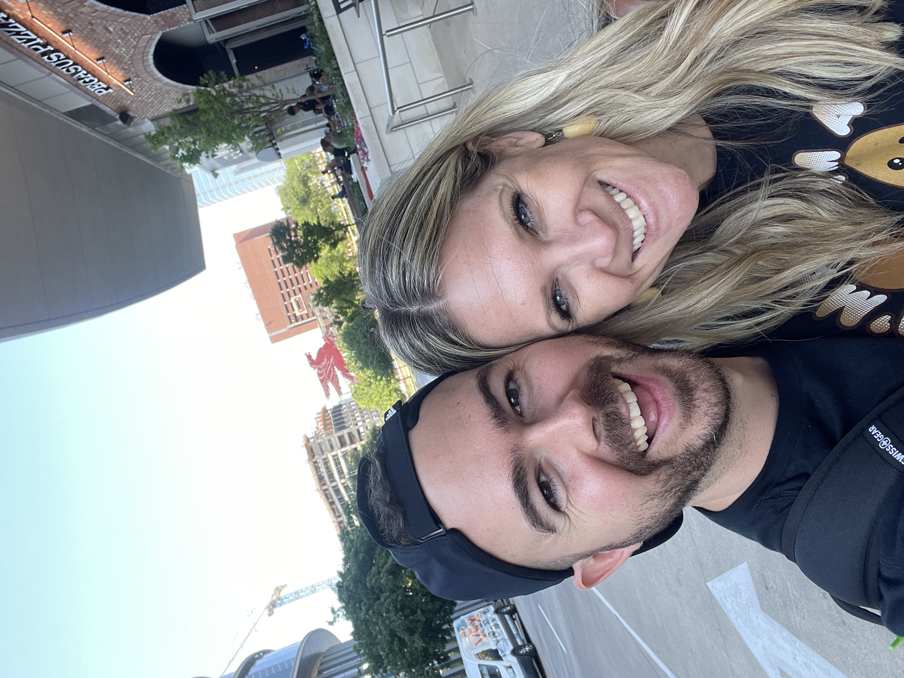

Foster Dickson

Summary
I am a driven and highly-motivated individual with a desire to learn new fields and excel within each capacity I find myself. I have a passion for working with teams and diving into challenges in search of a solution.
Education
- Bachelor of Science in Religion: Biblical and Theological Studies - Liberty University (2019-2020)
Work Experience
Trainer - Panera Bread
- Oversaw training of new crew members during first two months of employee on-boarding.
- Led teams through various shifts.
- Interacted with coporate leadership in developing systems to accelerate store growth.
Director of Morale - Chick-Fil-A
- Oversaw hiring and training of new employees.
- Monitored crew morale and developed systems to improve overall crew morale, enabling the crew to perform at even higher levels.
- Led a team of 80+ crew members in daily store operations.
- Oversaw regular customer service endeavors.
Intern - Global Youth Ministry
- Helped develop curriculum for youth groups to implement with teens.
- Led conferences and camps, often serving as a primary contact role for guests.
- Helped lead worship.
- Taught both in small and large group capacities.
Skills
- Customer Service: ⭐⭐⭐⭐⭐
- Public Speaking: ⭐⭐⭐⭐⭐
- Microsoft Office Suite: ⭐⭐⭐
- Web Design: ⭐
Other